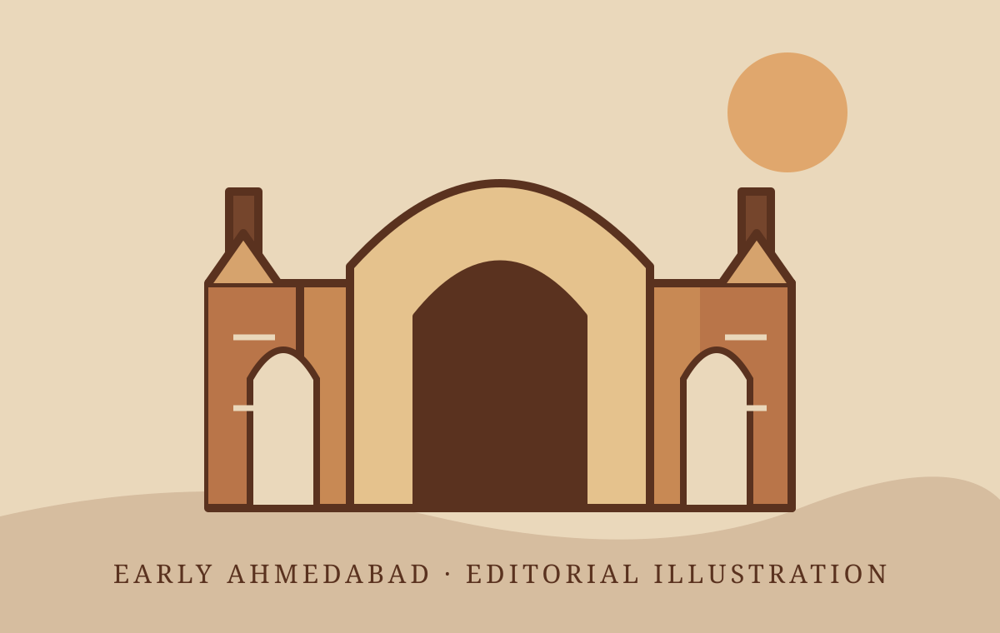
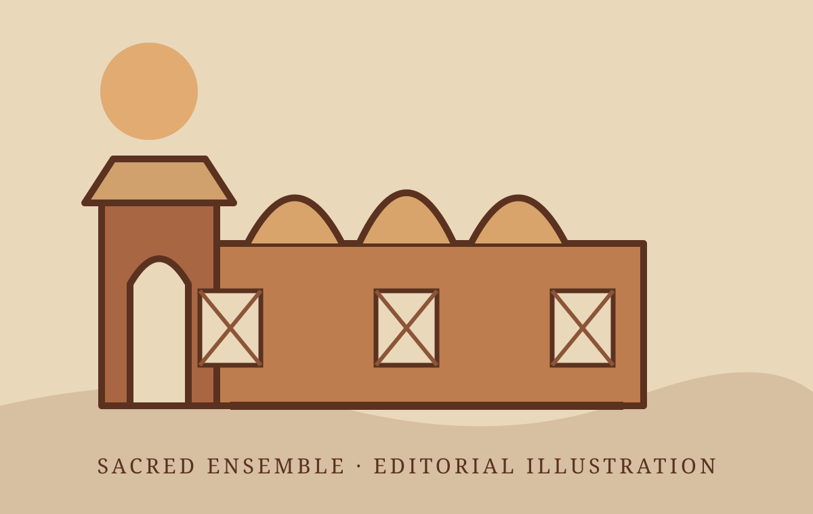
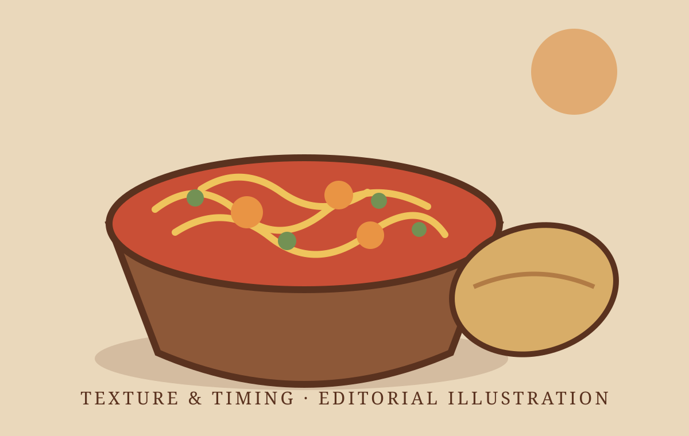
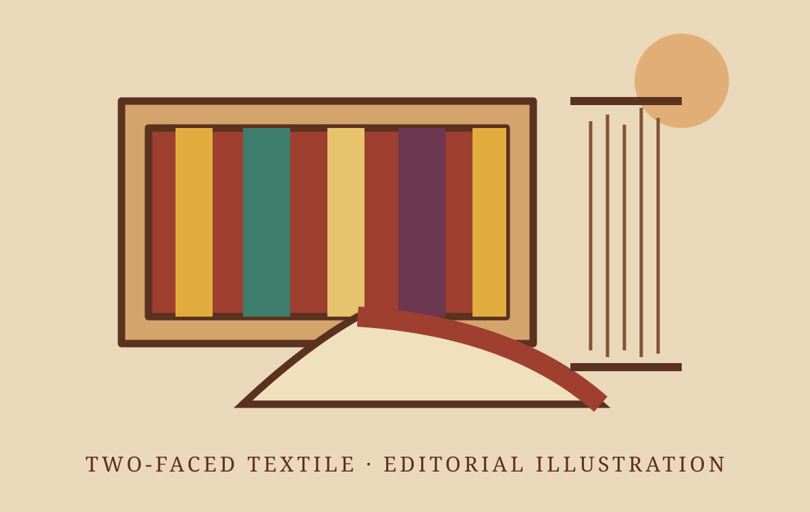
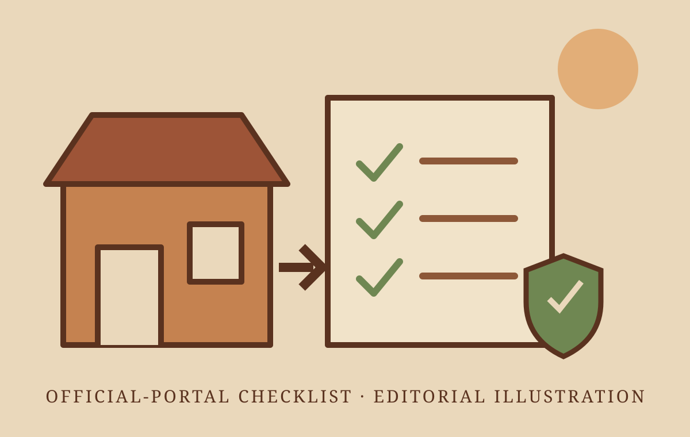

Local businesses
Bring attention to neighbourhood shops, homegrown brands and the people building them.
Ek rasta. Dus nazariye. Scroll through a warm, illustrated Ahmedabad—one place, one new perspective at a time.
Explore Beyond Soch ↗Behind every local shop, handmade product and homegrown idea is a story worth sharing. Our aim is to bring those stories into the spotlight.
“Buy products which have been made locally”
Support local products and celebrate the people who make them. Beyond Soch carries this idea into our creative mission: helping local stories be seen and heard.
Photo: PM India official portrait.
Beyond Soch is a creator platform with a Vocal for Local mission. We want to connect audiences with local businesses, makers and experiences through creative storytelling. Rooted in Ahmedabad and inspired by Gujarati culture, our focus is on the people and ideas that make our community distinctive.
Beyond Soch brings together a creator’s perspective and a Vocal for Local mission: helping local businesses, artisans and homegrown ideas find a voice through storytelling.
The vision is simple—look beyond the product to the people, effort and culture behind it. From Ahmedabad’s neighbourhoods to emerging local brands, the aim is to create stories that invite audiences to discover, connect and support local.
Nilesh Chavda is the co-founder of Beyond Soch. Together with founder Pranay Brahmbhatt, he shares the platform’s mission to bring local stories, culture and homegrown ideas to a wider audience.
At the heart of Beyond Soch is a simple belief: the people behind local businesses deserve to be seen and heard. Our storytelling invites audiences to discover their work and support local.
Bring attention to neighbourhood shops, homegrown brands and the people building them.
Celebrate handmade work, local traditions and the skills that deserve to be recognised.
Create conversations around local ideas, experiences and everyday community life.
Watch these reels from Beyond Soch. Discover more stories, ideas, places, products and food on our official Instagram profile.
Reels load directly from Instagram and need an internet connection. If a reel does not appear, use its Watch on Instagram link.
Are you a local business, artisan or homegrown brand? Share your story and discuss a creator collaboration with Beyond Soch.
Discuss a creator-led reel or a story built around your brief.
Explore a visit, launch or experience through a fresh perspective.
Bring your campaign idea and discuss a format that fits.
Ahmedabad guides, cultural discoveries and ideas for supporting local—read the stories behind the journey.

Explore Ahmed Shah Mosque through its 1414 history, carved façade, stone screens and a respectful architecture-first approach near Bhadra Fort.
Read the story →Beyond Soch editorial illustration · Labelled in story
Understand Shah Alam Roza as a layered mosque-and-tomb ensemble, with practical guidance for observing its gates, jalis and sacred spaces respectfully.
Read the story →Beyond Soch editorial illustration · Labelled in story
Learn how tomato gravy and crisp sev work together in sev tameta nu shaak, what to ask when ordering and why serving time matters.
Read the story →Beyond Soch editorial illustration · Labelled in story
Understand Mashru’s silk-faced, cotton-backed structure, weaving process and the questions that support accurate buying, credit and care.
Read the story →Beyond Soch editorial illustration · Labelled in story
Use the official Udyam portal safely, prepare the right identity and business details, avoid paid lookalike sites and maintain accurate MSME records.
Read the story →Beyond Soch editorial illustration · Labelled in story